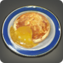

Giant Popoto Pancakes

Description
Giant popotoes are mashed, mixed with eggs, then cooked to create these light and fluffy treats.
EXP Bonus: +3% Duration: 30m
(Duration can be extended to 60m by consuming multiple servings)
Ingredients
- 8 Fire Crystal
- 8 Water Crystal
- 2 Giant Popoto
- 1 Golden Honey
- 1 Upland Wheat Flour
- 1 Elder Nutmeg Seeds
- 1 Egg of Elpis
- 1 Northern Sea Salt
Steps
- Mash Giant Popoto in a large mixing bowl.
- Add Upland Wheat Flour, Egg of Elpis, and Northern Sea Salt.
- Grate Elder Nutmeg Seeds into mixture.
- Add Golden Honey and mix.
- Don't mix too much - the key to light and fluffy popoto pancakes is a batter with perfect consistency.
- Preheat griddle with Fire Crystals.
- Lightly grease griddle with butter, wipe away excess.
- Use a consistent measurement for your pancakes (1/4 cup is a good standard).
- Start pouring batter in the middle of the griddle, then use a circular motion to create a nice round shape.
- Let underside cook until golden brown and bubbles form on top surface.
- Flip a dip and cook the rest of that bad boy.